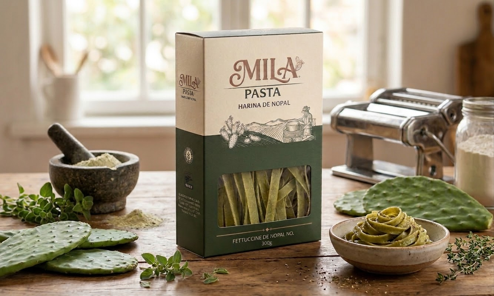

Misión
Elaborar pastas secas artesanales e innovadoras a base de harina de nopal, combinando la tradición culinaria con las bondades del campo mexicano.
Del campo mexicano a tu mesa, en forma de pasta.

Somos una empresa orgullosamente mexicana nacida en el estado de Hidalgo en el año 2023. Nos dedicamos a la elaboración de pastas secas a base de harina de nopal, aprovechando las propiedades del nopal con la finalidad de ofrecer a nuestros clientes una alternativa alimenticia diferenciada y saludable.
Elaborar pastas secas artesanales e innovadoras a base de harina de nopal, combinando la tradición culinaria con las bondades del campo mexicano.
Expandirnos a nuevos mercados internacionales a través de pastas saludables de calidad, transformando la alimentación diaria de miles de familias a nivel global.
Desde la selección de nuestros insumos hasta el empaquetado final, trabajamos con higiene y excelencia para garantizar que a la mesa de cada cliente llegue una pasta segura y confiable.
Nos apasiona transformar ingredientes tradicionales en alternativas nutritivas e innovadoras, buscando siempre nuevas formas de agregar valor a nuestros productos para destacar en el mercado.
Ponemos el corazón en crear opciones gastronómicas que alimenten de forma consciente, demostrando que comer saludable también es sinónimo de disfrutar.